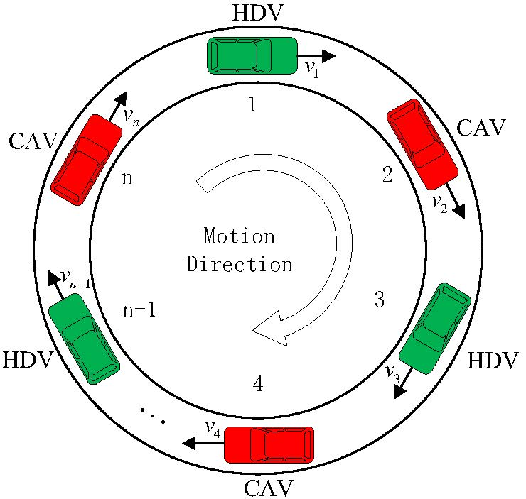
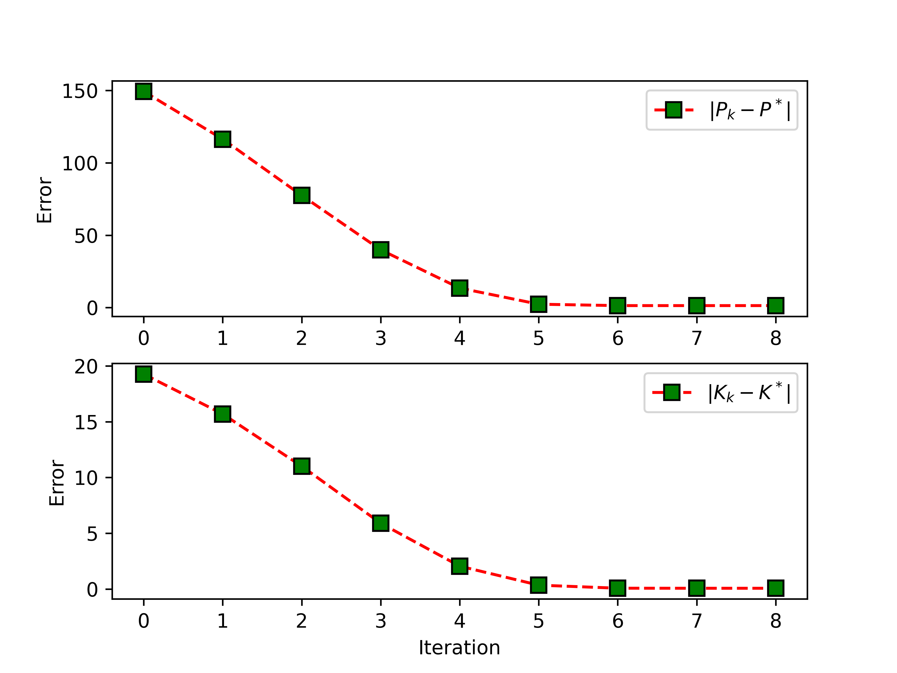
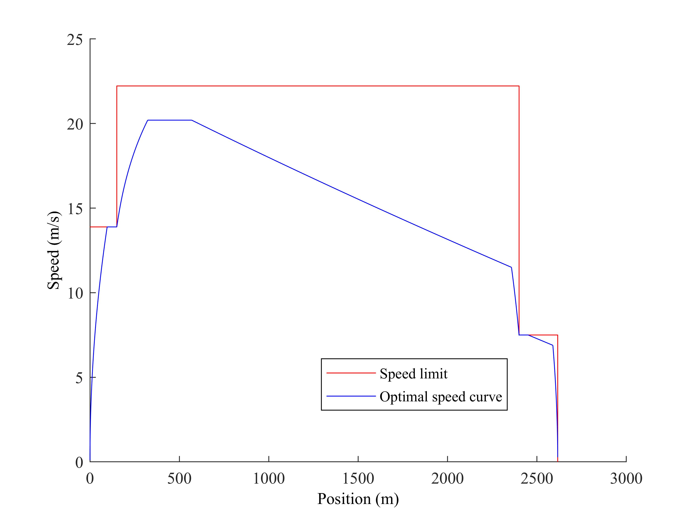

Convergence errors across all computing nodes under parameter
variations and external disturbances.
Distributed optimization enables a network of agents to solve a
global objective using only local data and
neighbor-to-neighbor communication. A representative case is
federated learning, where each
agent retains its own dataset while jointly training a global model
that minimizes the aggregate loss.
My work develops robust algorithms that provably
converge despite complex agent dynamics,
parametric uncertainties, and exogenous disturbances. We co-design
the
optimizer and controller—leveraging output regulation,
extremum seeking,
and reinforcement learning—and
certify stability and performance using the small-gain
theorem and singular perturbation
theory. Applications include distributed computation,
sensor networks, robotic
swarms, and smart grids.
Data-Driven Traffic Signal Optimization
Performance comparison.
Urban traffic signals are often fixed or heuristically actuated, and
they struggle to handle uncertain and time-varying
demand. I use a data-driven approach that learns
traffic dynamics from
sensor data and optimizes signal timings in real time via various
data-based control strategies.
I built and calibrated a 42-intersection SUMO model
from field data; learned
the traffic flow dynamics with linear regression, multi-layer
perceptrons, and deep neural networks ; engineered
an optimization pipeline to meet real-time constraints, integrating
linear quadratic regulator, gain scheduling, reinforcement
learning, and model predictive control (MPC) .
Deployed across 24 intersections with computer-vision sensors, the
pipeline reduced average travel time by 19.4% and
vehicle queue lengths by 15.6% in field
experiments. The figures left illustrate the
queue-length comparison between the proposed
MPC controller and the standard NEMA
controller.
Reinforcement Learning for Autonomous Driving

Mixed traffic on a ring road.

Convergence of the controller parameters.
In mixed traffic, the parameters of human-driven vehicles (HDVs) are unknown
and unmeasurable,
making it difficult to regulate the overall platoon speed and alleviate
congestion on freeways and ring roads.
I developed a unified reinforcement learning approach that
learns directly from vehicle
input–output data
and uses connected and autonomous vehicles (CAVs) to regulate the speed of
the entire platoon in both settings.
I first analyzed the stabilizability of mixed CAV–HDV strings for ring-road
and freeway topologies,
then—relying only on driving data and no model-parameter
knowledge—designed RL controllers that
(i) stabilize the system and (ii) attenuate external
disturbances,
with provable convergence of the optimal controller/parameters.
The method improves platoon-level speed regulation and congestion
mitigation;
the figures above show a ring-road experiment (left) and the convergence of
the learned
parameters during training (right).
Reinforcement Learning for Energy-Efficient Train Operation

Optimal speed profiles under speed limit.
As line conditions and operating scenarios grow more complex,
classical optimal control struggles to compute energy-efficient
train speed profiles.
Dynamic programming can handle this numerically,
but the standard approach suffers from the curse of
dimensionality. To address this, I develop
reinforcement learning
methods that efficiently generate the approximate optimal speed
profiles.
Concretely, I use three complementary approximators for
value functions: a rollout
estimator, an interpolation-based
approximator, and a neural-network approximator.
The resultant strategies can closely match solutions from the
classical maximum
principle. To make the comparison, I resolve
an open question
by proving the uniqueness of the optimal
trajectory
under speed limit constraints (see left figure).
The proposed approach yields energy-efficient driving
strategies in both single-train and multi-train operations
when exploiting regenerative energy .
Last update on | Design and source code from Jon Barron's website